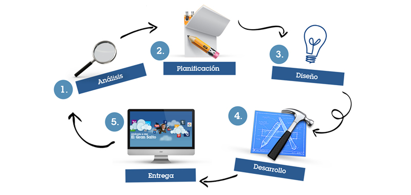

Pasos A Seguir Para El Desarrollo De Un Sitio Web

Pasos Para Crear Una Página Web
1. Registro de dominio
El primer paso para tener presencia en Internet es registrar un dominio. El nombre de dominio es como su dirección en Internet (www.mabelgiordano.com.bo), a través de la cual los clientes potenciales visitarán su página web para conocer su oferta de productos y servicios. Aunque parezca una actividad muy simple, la definición del nombre, la categoría del dominio (.com, .net, .org, info, .name, .biz, .tv, .gov, .edu) y el código de país (.com.bo, .com.br, .com.co, .com.cl) es crítica y deben ser cuidadosamente establecidos en base al giro de la empresa, mercado destino y disponibilidad de nombres de dominio.
Es muy importante que alguien dentro de su empresa adquiera la titularidad del dominio para que ustedes tengan el control total sobre el mismo. Si usted adquiere un paquete de servicios y no se encarga personalmente de registrar su dominio, es muy probable que éste quede bajo el control de una tercera persona ajena a su empresa. Muchos de los problemas en la administración de dominios se deben a que las empresas no adquieren esa responsabilidad desde un principio.
2. Hospedaje del dominio
Para que su página web pueda ser visitada por los usuarios de Internet, adicional al nombre de dominio, usted debe contratar un servicio de hospedaje (web hosting) a través del cual su empresa contará con un espacio en disco dentro de un servidor web conectado a Internet y además un número determinado de cuentas de correo electrónico personalizadas con el nombre de su dominio (juan.perez@miempresa.com.mx), las cuales podrá usted asignar a los empleados que las requieran. Actualmente, la mayoría de los proveedores de web hosting ofrecen en su paquete básico 250 Mb de almacenamiento, 8,000 Mb de transferencia y 10 cuentas de e-mail.
3. Diseño del sitio web
El diseño es la comunicación textual (contenidos) existente en Internet una faceta visual, sino que obliga a pensar una mejor estructuración de los mismos en este soporte. La unión de un buen diseño con una jerarquía bien elaborada de contenidos aumenta la eficiencia de la web como canal de comunicación e intercambio de datos, que brinda posibilidades como el contacto directo entre el productor y el consumidor de contenidos, característica destacable del medio Internet.
4. Mantenimiento del sitio web
Todo evoluciona en el tiempo y su empresa no es la excepción. Es muy probable que usted tenga que hacer algunos ajustes a su página web cada determinado tiempo debido a cambios de productos, altas y bajas de personal de contacto, nuevos distribuidores, noticias, eventos, actualización de información técnica, nuevos artículos, entre otros conceptos. La frecuencia del mantenimiento varía de empresa en empresa, ya que existen compañías que requieren cambios semana tras semana y otras que revisan el contenido de su página web una vez al año.
Si su empresa cuenta con un sitio web extenso y participan varias personas en el mantenimiento del mismo, es conveniente que usted evalúe la posibilidad de que su sitio web sea desarrollado empleando un administrador de contenido CMS (content management system), de tal forma que la labor de mantenimiento sea más sencilla y expedita y no tenga usted que depender de una agencia de diseño web para mantener actualizado su sitio.
5. Difusión del sitio web
Por lo general este es el tema en el que existe mayor confusión entre las empresas que implementan una página web por vez primera. La mayoría de las personas piensan que, para poder promocionar eficazmente sus productos y servicios en Internet, es suficiente con tener la página web y desconocen que ésta debe contar con un medio de difusión o promoción, como quiera usted llamarle, para que las visitas lleguen.
No sólo es necesario que su página web tenga un diseño agradable. Para que su sitio sea visitado con frecuencia y se generen las oportunidades de negocio (Internet generated leads), los clientes potenciales deben saber que su página web existe y debe haber alguna forma de localizarla fácilmente. Aun cuando existen diversas formas de difusión, actualmente el método más efectivo es el posicionamiento de páginas web en buscadores, ya que es precisamente por medio de los motores de búsqueda que los usuarios de Internet localizan los productos y servicios que ellos y ellas requieren.
Autor: Mabel Giordano
Siguelo en su Web:
Copyright © 2017